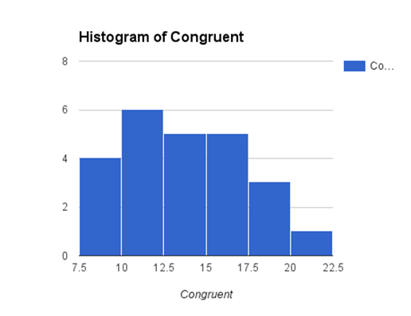
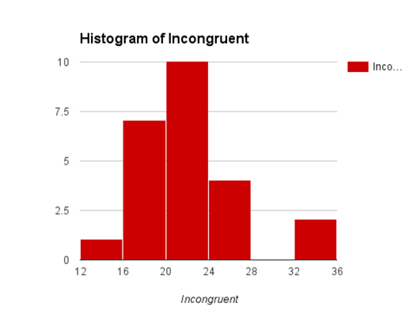
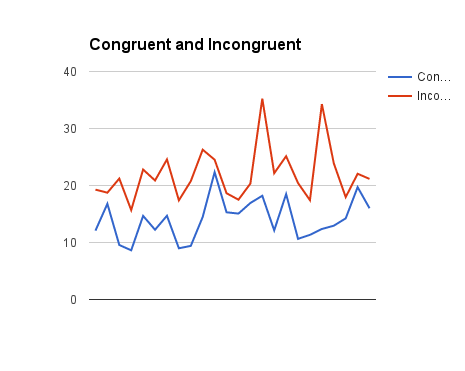
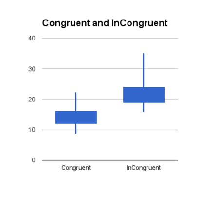

Test a Perceptual
Phenomenon
Google sheet -https://docs.google.com/spreadsheets/d/1xV7n2GqBCukKMlfeDA-83E_uY5y9nKXwkKlW2j9jAYM/edit?usp=sharing
1)
Independent
variable is the word being displayed in a color of ink i.e. with two
conditions. Since, we are measuring the time it takes to name the ink colors in
equally-sized lists, the dependent variable is Time.
2)
Null
Hypotheses - there is no significant difference in time taken to name the color
of the ink in congruent words condition & incongruent words condition.
H0: Mean Time (congruent) =≈ Mean Time (incongruent)
Or
Mean Time (congruent) - Mean Time (incongruent) =≈ 0
Alternate Hypotheses - there is significant difference in time taken to
name the color of the ink in congruent words condition &
incongruent words condition.
Ha: Mean Time (congruent) ≠ Mean
Time (incongruent)
Or
Mean Time (congruent)
- Mean Time (incongruent) ≠ 0
We do not know the population parameters Mu and Sigma in this case, so we
cannot perform z- test. We have only 2 samples from which we have to draw our
conclusions. We would perform 2 sample t-test as we are comparing two samples
which are dependent and the same subject (participant) is taking the Stroop test
twice with different conditions i.e. once with congruent words condition
& other with incongruent words condition. This is a within subject
design and each subject is assigned two conditions for which we have paired
data.
3)
Measure
of Central Tendency – Mean
Mean
Time (congruent) = 14.051125
Mean Time (incongruent) = 22.01591667
Mean of the Differences of the respective times of both conditions i.e.
Mean Difference = Mean Time (congruent) - Mean
Time (incongruent) = -
7.964791667
Measure of Variability
– Standard Deviation
Standard Deviation of Differences = 4.86482691
Standard Error of Mean Difference = 0.993028635
4)
Distribution
of the congruent sample data appears to be uniform whereas distribution of the incongruent
sample data appears to be skinny normal distributed. In the middle of the
distributions, participant’s performance to stroop tasks get close and about to
merge with both the conditions.



In the below boxplot of the Congruent
and Incongruent data, there appears to be large difference in the Min., Lower
quartile, Upper Quartile, Median and Max. points.

5)
Now,
tvalue = Mean Time (congruent) - Mean Time
(incongruent)
Standard Deviation of Mean Difference/√size
of the sample
=
-7.964791667
4.86482691/√24
= -8.020706944
Taking 95 % confidence level for 2 tailed t-test and for DF = 23, our t-critical value comes out to ±2.069 in the tails. Now, our tvalue is -8.02 which is way far away from the mean and lies left of the
-2.069 in the left tail in the low probability area of .025. The two-tailed P value is less than 0.0001.Therefore,
we would reject the null in favor of
the alternate i.e. Mean Time (congruent)
≠
Mean Time (incongruent)
i.e. there is significant difference in time
taken to name the color of the ink in congruent words condition &
incongruent words condition.
Also, since the Mean difference is negative,
it indicates that the time taken
to name the color of the ink in incongruent
words condition is more than the congruent
words condition.
And yes, the result match the expectations as stroop task while
incongruent words condition took significantly more time to get completed for
me as well as indicated by the sample data.
6)
The words themselves have a strong influence over our ability to say the
color. The interference between the different information (what the words say
and the color of the words) our brain receives causes a problem.
There are several theories used to explain the
Stroop effect and are commonly known as ‘race models’. This is based on the
underlying notion that both relevant and irrelevant information are processed
in parallel, but “race” to enter the single central processor during response
selection. They are:
This theory suggests there is a lag in the
brain's ability to recognize the color of the word since the brain reads words
faster than it recognizes colors. This is based on the idea that word
processing is significantly faster than color processing. In a condition where
there is a conflict regarding words and colors (e.g., Stroop test), if the task
is to report the color, the word information arrives at the decision-making
stage before the color information which presents processing confusion.
Conversely, if the task is to report the word, because color information lags
after word information, a decision can be made ahead of the conflicting
information.
The Selective Attention Theory that color
recognition as opposed to reading a word, requires more attention, the brain
needs to use more attention to recognize a color than to word encoding, so it
takes a little longer. The responses lend much to the interference noted in the
Stroop task. This may be a result of either an allocation of attention to the
responses or to a greater inhibition of distractors that are not appropriate
responses.
This theory is the most common theory of the
Stroop effect. It suggests that since recognizing colors is not an
“automatic process” there is hesitancy to respond; whereas, the brain
automatically understands the meaning of words as a result of habitual reading.
This idea is based on the premise that automatic reading does not need
controlled attention, but still uses enough attentional resources to reduce the
amount of attention accessible for color information processing. Stirling
(1979) introduced the concept of response automaticity. He demonstrated that
changing the responses from colored words to letters that were not part of the
colored words increased reaction time while reducing Stroop interference.
This theory suggests that as the brain analyzes
information, different and specific pathways are developed for different
tasks. Some pathways, such as reading, are stronger than others,
therefore, it is the strength of the pathway and not the speed of the pathway
that is important. In addition, automaticity is a function of the strength
of each pathway, hence, when two pathways are activated simultaneously in the
Stroop effect, interference occurs between the stronger (word reading) path and
the weaker (color naming) path, more specifically when the pathway that leads
to the response is the weaker pathway
Another alternative can be "Number
Stroop" Effect Experiment, "Directional
Stroop" Effect Experiment & "Animal
Stroop" Effect Experiment.
List of
resources referred –
1)
https://s3.amazonaws.com/udacity-hosted-downloads/t-table.jpg
2)
http://www.graphpad.com/quickcalcs/
3)
https://faculty.washington.edu/chudler/words.html#seffect
4)
https://en.wikipedia.org/wiki/Stroop_effect
{kind=link}